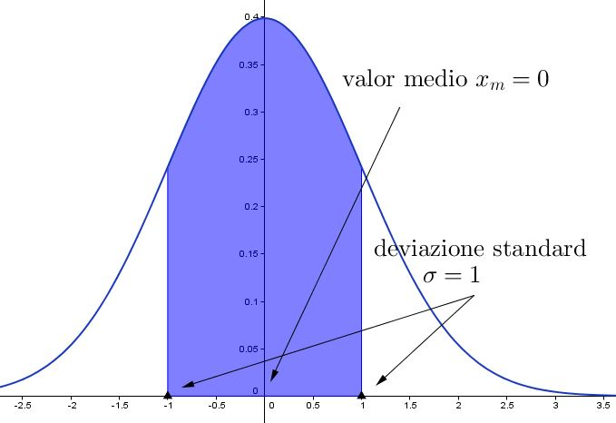
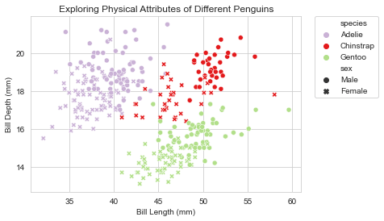
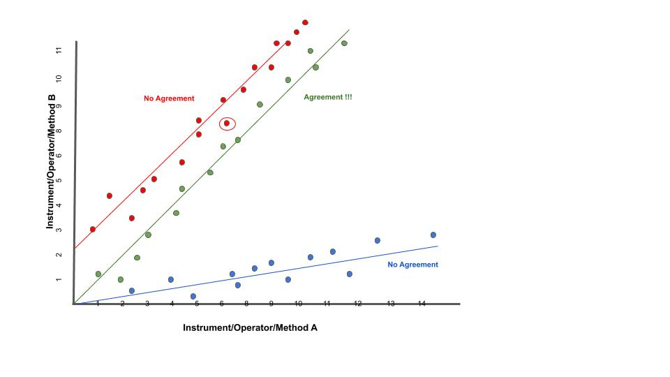
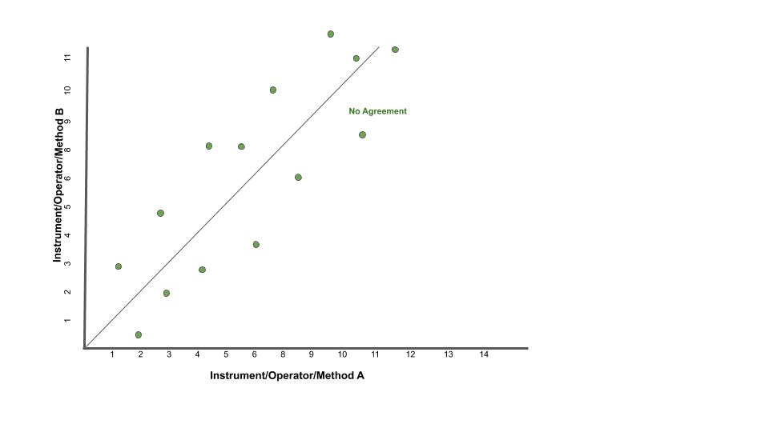
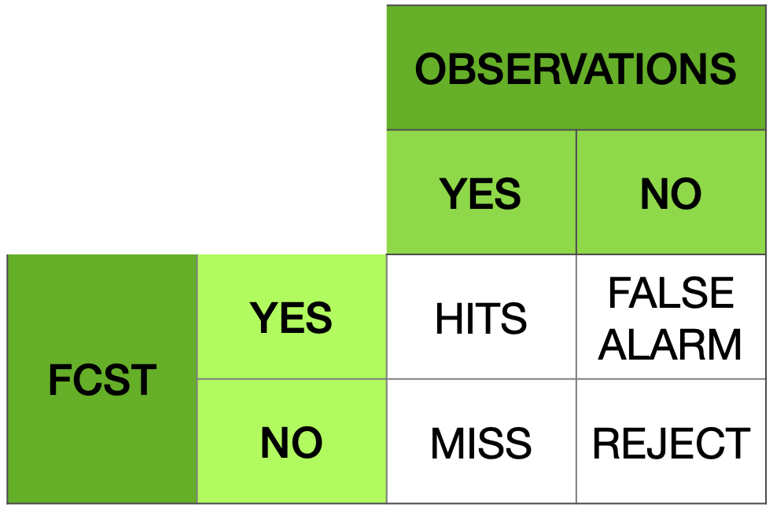

Lavorare con i dati¶
Teoria degli errori¶
Licenza CC BY-NC-ND 2.5 https://creativecommons.org/licenses/by-nc-nd/2.5/
Copyright WeSchool srl Rome, 00186, Via Dei Barbieri, 6, VAT no. 11514241006. For contacts: rpd@weschool.com. https://library.weschool.com/corso/metrologia-e-teoria-degli-errori-dalla-varianza-alla-deviazione-standard-6310.html
La misura è un'operazione fondamentale in Fisica come in tutte le Scienze. Per questa ragione c'è un'intera disciplina che se ne occupa sia dal punto di vista teorico, sia per quello che riguarda gli aspetti pratici: la metrologia.
Una delle sue articolazioni è la teoria degli errori, la quale studia come l'errore, inevitabile in qualsiasi misurazione, può essere stimato, controllato ed eventualmente ridotto.
Per misurare una grandezza fisica occorre seguire una serie di operazioni il cui risultato è esprimibile con un numero e con un'unità di misura. Tuttavia, nessuna misura sarà mai esatta: a ciascuna misura, cioè, sarà associata un’incertezza, che rappresenta la magnitudine degli errori inevitabilmente effettuati durante la misurazione. Quindi ogni misura non rappresenta il valore “vero” di una grandezza, ma solo una sua sensibile approssimazione.
Esistono due tipi di errori:
Errori sistematici: sono gli errori insiti nello strumento di misura. Non possono essere eliminati del tutto ma è possibile ridurre l'errore usando uno strumento più preciso. Le fonti principali di questi errori sono, il difetto dello strumento usato, l'interazione strumento - sperimentatore, l’interazione strumento - fenomeno in esame, le errate condizioni di lavoro o l’imperfetta realizzazione del fenomeno. Gli errori sistematici sono difficili da individuare e da ridurre poiché, per loro stessa natura, si ripetono appunto sistematicamente ad ogni misurazione.
Errori casuali: sono gli errori dovuti a fenomeni casuali e non controllabili, che influenzano la lettura della misura. Sono errori casuali tutte quelle incertezze sperimentali che possono essere rilevate mediante la ripetizione delle misure: non possono mai essere eliminati del tutto, ma la loro influenza sulla misurazione può essere fortemente ridotta grazie a strumenti statistici. Proprio questi strumenti sono oggetto di questo corso: grazie a questi strumenti, al ripetersi delle misure, si possono determinare dei parametri (principalmente media e deviazione standard) in modo tale che le misurazioni che si ottengono oscillano attorno ad un valore pressoché costante.
Gli errori aleatori possono essere ridotti mediante l’impiego di alcuni strumenti statistici.
Supponiamo di voler effettuare la misura di un aspetto di un’esperienza fisica. Per poter ridurre l’influenza degli errori casuali è necessario poter effettuare molte misure della stessa quantità: è quindi necessario che l’esperienza fisica della quale vogliamo misurare un aspetto sia riproducibile a piacimento, sempre nelle medesime condizioni.
Assicuratici di questo, possiamo proseguire, ed effettuiamo un certo numero N di misure. Indichiamo con x1 il risultato (sbagliato) della prima misurazione, con x2 il risultato della seconda, eccetera, sino ad xN.
Definizione
Si chiama media aritmetica o valor medio la quantità
cioè la somma complessiva delle misure, diviso il numero delle misurazioni effettuate.
Questo valore viene comunemente confuso con il Valore Atteso, il quale però è un risultato teorico (e quindi esatto), mentre la media arimetica è un valore sperimentale ed errato che approssima il valore atteso.
La media aritmetica consiste di individuare una approssimazione del valore “vero” della quantità misurata, la cui precisione aumenta all’aumentare del numero di misurazioni effettuate.
Definizione
Si chiama errore assoluto, e si indica con Ea, la differenza in modulo tra il valore teorico della misura effettuata e il valore effettivamente misurato: questo dà un’idea di quanto i dati raccolti si discostino dal valore che si vuole misurare. In questo modo, ogni misurazione può essere indicata con
il che indica che ci si trova vicino al valor medio, più o meno distanti, ma al massimo una quantità pari all’errore assoluto. Quindi, tanto è più piccolo l’errore assoluto, tanto più precisa sarà la misurazione.
Il problema sorge quando il valore teoricamente esatto della quantità da misurare non è disponibile, il che accade la maggior parte delle volte. Come procedere in questi casi al computo dell’errore assoluto?
Ci sono diversi modi di calcolare l’errore assoluto: se si hanno a disposizione pochi dati è sufficiente calcolare la semidispersione massima, ma al crescere dei dati si usa la deviazione standard.
Definizione
Si definisce semidispersione massima, indicata con d o Δx, la semi-differenza massima tra i valori osservati: se xmax è il valore più grande e xminx quello più piccolo, allora la semi-dispersione massima è
A volte è necessario sapere di quanto si sbaglia a fronte di una misurazione, soprattutto per accorgersi di quanto il valore dell’errore influisca sulla misurazione effettuata.
Definizione
Si dice errore relativo, indicato da Er, il rapporto tra errore assoluto e la media delle misurazioni:
Si dice errore percentuale, indicato da E%, l’indicazione percentuale dell’errore relativo:
Errore relativo e percentuale, essendo rapporti fra grandezze omologhe, non hanno unità di misura: sono semplicemente numeri. L’errore assoluto e il valor medio, invece, posseggono la stessa unità di misura della quantità che si desidera misurare.
Errore statistico e deviazione standard¶
Per effettuare il più correttamente possibile una misurazione, è necessario ridurre al minimo l’errore assoluto. L’errore assoluto, tuttavia, essendo la differenza tra il valore medio delle valori ottenuti e il valore teorico della misura desiderata, non può essere assunto a priori, ma deve essere calcolato a fronte delle misurazioni effettuate.
A seconda della misurazione da effettuare, per valutare l’errore assoluto si possono usare metodi differenti. Nella gran parte dei casi si ricorre alla deviazione standard.
Definizione
Effettuiamo una serie di misurazioni x1,x2,…,xN e calcoliamone il valor medio
Lo scarto, indicato con la lettera ξ (“csi” greca), è la differenza tra il valore medio e il valore di una singola misurazione:
Definizione
Ora definiamo la varianza campionaria come la media aritmetica del quadrato degli scarti:
Definizione
La deviazione standard è la radice quadrata (positiva) della varianza campionaria:
Per motivi di correttezza statistica, al crescere del numero di misurazioni effettuate, si usa una formula leggermente diversa, lo scarto quadratico medio, dividendo per N−1 invece che per N:
La deviazione standard, in presenza di un numero abbastanza alto di misurazioni, rappresenta al meglio l’errore assoluto, ed è quindi di fondamentale importanza per determinare con correttezza l’entità delle fluttuazioni riscontrate in una misura.
Usare media e deviazione standard¶
Quando riporti variabili distribuite normalmente, utilizzare media e deviazione standard è corretto e utile perché significa fornire informazioni molto precise: stai dicendo al tuo lettore che circa il 95,5% dei valori della variabile che stai descrivendo rientra nell’intervallo “media ± 2*deviazione standard”, che circa il 99,7% dei valori rientra nell’intervallo “media ±3*deviazione standard”, che il 68,3 rientra nell’intervallo “media ±1*deviazione standard, e così via con tutte le altre caratteristiche della distribuzione normale.
Quando invece descrivi una variabile distribuita in modo non-normale, utilizzare media e deviazione standard non ha più questo tipo di utilità, anzi è addirittura dannoso per il lettore che cerca di interpretare i tuoi dati, perché stai fornendo implicitamente informazioni false.
Devi perciò usare utilizzare altre statistiche descrittive, solitamente mediana (al posto della media) e range interquartile(come dispersione, al posto della distribuzione standard).
Valutare la concordanza tra metodi¶
Una delle operazioni che spesso sono necessarie è la valutazione della concordanza di due metodi (o due diversi strumenti, o due diversi operatori) nell’effettuare una misura quantitativa.
Ad esempio, se lo strumento A e lo strumento B misurano la temperatura in modo concordante.
Il confronto, non va effettuato tenendo conto delle medie dei valori prodotti dallo strumento A e delle medie prodotte dallo strumento B.
La strategia corretta è, invece, calcolare la differenze per ogni campione tra il valore generato dallo strumento A e il valore fornito dallo strumento B.
E' quindi evidente che la valutazione di concordanza tra due misuratori non va mai condotta attraverso il confronto tra medie, ma attraverso l’analisi delle differenze tra i valori.
Scatter plot/grafico di dispersione¶
Abbiamo un metodo A e un metodo B, e vogliamo capire se i due strumenti sono concordanti e, perciò, se uno può essere utilizzato al posto dell’altro indistintamente.
Scatter plot è un tipo di grafico in cui due variabili di un set di dati sono riportate su uno spazio cartesiano. I dati sono visualizzati tramite una collezione di punti ciascuno con una posizione sull'asse orizzontale determinato da una variabile e sull'asse verticale determinato dall'altra.
Il coefficiente di correlazione¶
Il Coefficiente di correlazione di Pearson (r) è lo standard statistico per misurare il grado di relazione lineare tra due variabili. Questo coefficiente fornisce un riepilogo numerico che va da -1 a +1, dove ciascun punto finale rappresenta una relazione lineare perfetta, negativa o positiva. Un valore 'r' pari a 0 indica alcuna correlazione lineare tra le variabili. Riflette quanto una variabile può prevederne un'altra attraverso un'equazione lineare. In pratica, il valore della "r" guida gli analisti nel determinare la prevedibilità e la forza della relazione
test:
lo scatter plot deve mostrare una relazione di tipo lineare tra le due variabili
non devo essere presenti outliers influenti
la distribuzione di entrambe le variabili deve essere normale
Di seguito è riportata una rappresentazione visiva di questi scenari tramite scatter plot:
Correlazione positiva: All’aumentare di una variabile, aumenta anche l’altra.
Correlazione negativa: All’aumentare di una variabile, l’altra diminuisce.
Nessuna correlazione: Nessun modello lineare distinguibile nella relazione tra le variabili.
{kind=link}
Regressione lineare¶
La regressione lineare è un metodo statistico utilizzato per modellare la relazione tra una variabile dipendente (risposta o output) e una o più variabili indipendenti (predittori o input).
Nella sua forma più semplice, la regressione lineare è una relazione lineare tra le variabili descritta dall'equazione:
y=mx+q+ϵ
Dove:
y è la variabile dipendente.
x è la variabile indipendente.
m è il coefficiente angolare (pendenza) che misura l’effetto di x su y.
q è l'intercetta, ovvero il valore di y quando x=0.
ϵ è l'errore residuo o rumore, che rappresenta la differenza tra i valori osservati e quelli predetti.
Una volta stimati questi parametri, posso usare l'equazione per fare previsioni o analizzare l’effetto delle variabili indipendenti sulla variabile dipendente.
Il metodo dei minimi quadrati¶
Il metodo dei minimi quadrati (in inglese OLS: Ordinary Least Squares) è una tecnica di ottimizzazione (o regressione) che permette di trovare una funzione, rappresentata da una curva ottima (o curva di regressione), che si avvicini il più possibile ad un insieme di dati (tipicamente punti del piano). In particolare, la funzione trovata deve essere quella che minimizza la somma dei quadrati delle distanze tra i dati osservati e quelli della curva che rappresenta la funzione stessa. Questo metodo converge solo nel suo caso limite a un'interpolazione, per cui di fatto si richiede che la curva ottima contenga tutti i punti dati.
Regressione lineare con il metodo dei minimi quadrati¶
Considero un insieme di punti (xi,yi) per i=1,2,…,n, devo trovare i parametri m e q che minimizzano la seguente funzione obiettivo:
y=mx+q
Per prima cosa calcolo il coefficiente angolare m
Poi calcolo dell'intercetta q:
Valutare la concordanza tra due stimatori¶
Tramite coefficiente di correlazione: errore: non è sufficiente per interpretare la concordanza tra due stimatori attraverso la correlazione.
Nell’ immagine puoi vedere 3 casi comuni di analisi di concordanza con i relativi scatter-plot.
scatter-plot rosso in alto E’ evidente che in questo caso vi è una buona correlazione ma questo non vuol dire che vi sia concordanza tra i metodi. Perchè? Perchè l’intercetta (il punto in cui la linea che modellizza la correlazione interseca l’asse Y) è diversa da zero. E questa intercetta indica lo scostamento sistematico tra i due metodi, il cosiddetto “bias”. Chiamiamola volgarmente la differenza media tra le misure dello strumento A e la misura dello strumento B.
scatter-plot blu in basso in questo caso la retta passa dall’origine ma ancora non basta. Il problema è la pendenza. Quando la pendenza della retta è diversa da 1, vuol dire che c’è una differenza tra i risultati prodotti dai due strumenti che dipende dal valore vero che stiamo stimando.
- scatter-plot verde finalmente qua ci siamo. In questo caso sono
rispettati tutti e due criteri necessari a parlare di concordanza: la retta passa per l’origine degli assi, indicando che non c’è un bias sistematico tra i due strumenti; la retta ha pendenza uguale a 1 (cioè è inclinata di 45 gradi) e ci dice che non c’è una proporzionalità della concordanza con il valore dell’analita.
Per parlare di concordanza, è ovviamente necessaria la correlazione dei dati. Uno scatter-plot potrebbe tranquillamente avere una retta passante per l’origine ed una pendenza uguale a 1 ma avere un indice di correlazione molto basso. Vedi ad esempio lo scatterplot sotto.
Grafico di Bland-Altman¶
Sull’asse verticale sono riportate le differenze tra le due misure (cioè l’errore di misura)
Sull’asse orizzontale le medie aritmetiche delle due misure. Assumendo infatti che le due misure effettuate siano equivalenti, la miglior stima del valore vero della misura è rappresentata dalla media aritmetica delle due misure.
Creative Commons Attribution-Share Alike 3.0 Unported license Matlab Figure Converted by PLOT2SVG written by Juerg Schwizer
Su questo grafico, oltre ai punti che rappresentano le singole unità statistiche, sono riportate poi anche delle linee orizzontali. In particolare:
la linea continua indica l’altezza in cui si collocano le differenze uguali a 0.
la linea centrale tratteggiata rappresenta la media delle differenze tra le misurazioni dei due metodi.
le due linee tratteggiate in alto ed in basso delimitano una banda che rappresenta i limiti dell’intervallo di confidenza della media delle differenze. La posizione di queste due linee è calcolabile come: media delle differenze ±1.96×SD.
Quando si osserva il grafico di Bland-Altman, tenere a mente questi punti:
Differenza media (bias): Controlla quanto differiscono in media i due metodi. Una piccola differenza significa che vanno molto d'accordo e hanno poche differenze sistematiche.
Limiti dell'accordo: Guarda il limiti dell'accordo. Questi mostrano l'intervallo in cui cade il 95% delle differenze. Limiti ristretti significano migliore precisione e concordanza. I punti del grafico che ricadono all’interno dell’intervallo di confidenza indicano le unità statistiche per le due metodiche indicano risultati statisticamente congruenti tra loro, mentre i punti collocati al di fuori dalle degli estremi dell’intervallo di confidenza rappresentano i casi per cui i due metodi non sono congruenti tra loro. Il fatto che vi sia congruenza statistica tra le due misurazioni, non significa però necessariamente che allora i due metodi siano tra loro interscambiabili. Questo grafico infatti valuta l’ampiezza delle differenze attraverso la costruzione di un intervallo di confidenza calcolato sulla differenza media, ma non ci dice se ai fini pratici l’ampiezza di questi intervalli sia accettabile o meno. La definizione di cosa si intende per limite accettabile, ovvero quale deve essere l’ampiezza massima dell’intervallo di confidenza affinché le due misurazioni possano essere considerate tra loro interscambiabili, deve essere infatti definita a priori in base a considerazioni teoriche, cliniche, biologiche o di altra natura sul fenomeno che si sta analizzando.
Limiti accettabili: Verificare se i limiti osservati rientrano nel limiti accettabili che hai impostato. Se lo sono, i metodi probabilmente concordano bene.
Tendenza e variabilità: Cerca se ci sono tendenze nelle differenze e quanto coerenti sono. Questo può dirti di più su come i metodi si differenziano.
Ma il metodo Bland-Altman ha alcuni limiti. Si presume che i dati abbiano una distribuzione normale, il che potrebbe non essere vero.
Regressione di Passing and Bablok¶
Considerando i limiti del modello di regressione ai minimi quadrati ordinari, W. Bablok e H. Passing hanno proposto un modello di regressione per il confronto dei metodi basato su un modello robusto e non parametrico. A differenza della regressione lineare ai minimi quadrati, la regressione di Passing e Bablok non è sensibile agli outlier, presuppone che gli errori di misura in entrambi i metodi abbiano la stessa distribuzione, non necessariamente normale, un rapporto di varianza costante, una distribuzione di campionamento arbitraria e imprecisione in entrambi i metodi. I requisiti della regressione di Passing e Bablok sono: misure distribuite in modo continuo (che coprono un ampio intervallo di misura) e relazione lineare tra i due metodi. La regressione di Passing e Bablok calcola l'equazione della retta di regressione da due serie di dati.
Il risultato della regressione di Passing e Bablok si compone di diverse parti, ognuna delle quali ha il suo ruolo nell'interpretazione dei dati di confronto dei metodi e nella conclusione dell'accordo tra i metodi. Il primo risultato è il diagramma di dispersione con la retta di regressione, che consente l'ispezione visiva dei dati misurati e l'evidente accordo tra la retta di regressione e la retta di identità (Figure 1A e 2A). L'equazione di regressione (y = a + bx) ha rivelato una differenza costante (intercetta della retta di regressione (a)) e proporzionale (pendenza della retta di regressione (b)) con i relativi intervalli di confidenza del 95% (95% CI). Gli intervalli di confidenza spiegano se il loro valore differisce dal valore zero (0) per l'intercetta e dal valore uno (1) per la pendenza solo per caso.
Pertanto, se l'IC al 95% per l'intercetta include il valore zero, si può concludere che non vi è alcuna differenza significativa tra il valore dell'intercetta ottenuto e il valore zero e che non vi è alcuna differenza costante tra i due metodi. Viceversa, se l'IC al 95% per la pendenza include il valore uno, si può concludere che non c'è una differenza significativa tra il valore della pendenza ottenuto e il valore uno e che non c'è una differenza proporzionale tra i due metodi. In questo caso possiamo assumere che x = y e che non vi è alcuna differenza significativa tra i metodi, per cui entrambi possono essere utilizzati in modo intercambiabile. Il primo esempio di analisi di regressione di Passing e Bablok su una serie di dati ottenuti misurando la concentrazione di bilirubina totale nel siero dei pazienti con due diversi analizzatori automatici è presentato in figura 1.
figura 1¶
Si noti che esiste una piccola differenza costante tra i due metodi (Figura 1). La compensazione di tale differenza può essere effettuata dopo ulteriori indagini sull'accuratezza di entrambi i metodi.
Il secondo esempio presenta una serie di dati ottenuti misurando la bilirubina diretta nel siero con due metodi, che rivelano una piccola costante ma un enorme errore proporzionale (Figura 2).
figura 2¶
Questi metodi differiscono notevolmente e non possono essere utilizzati contemporaneamente. Si noti che il coefficiente di correlazione in entrambi gli esempi è r = 0,99; ciò dimostra che i risultati del confronto dei metodi non possono essere valutati utilizzando la correlazione di Pearson.
Tabelle di contingenza¶
Le tabelle di contingenza sono usate per valutare l’interazione tra due variabili categoriche (qualitative). Possono essere chiamate anche tabelle a doppia entrata.
Tabelle di contingenza a doppia entrata e distribuzioni marginali
Una tabella a doppia entrata è una tabella che contiene righe e colonne ed aiuta organizzare i dati da variabili categoriali:
Le righe rappresentano le possibili categorie per una variabile qualitativa, ad esempio maschi e femmine.
Le colonne rappresentano le possibili categorie per una seconda variabile qualitativa, ad esempio se piace la pizza oppure no…
Un distribuzione marginale mostra quante risposte complessive ci sono per ogni categoria della variabile. La distribuzione marginale di una variabile può essere determinata guardando alla colonna (o alla riga) “Totale”.
Un evento è qualcosa che accade con uno o più possibili esiti. Un esperimento è il processo di misurare o fare un’osservazione.
Definizione importante: la probabilità di un evento è il rapporto tra il numero dei casi favorevoli e il numero dei casi possibili.
Metodo di valutazione delle performance di un sistema di allarme attraverso indici statistici ottenuti applicando il metodo delle misure dicotomiche. Il metodo di verifica si basa sul criterio binario della frequenza di occorrenze “si” e “no” di un evento. Tale evento viene definito da soglie quantitative predefinite, come ad esempio “precipitazioni > 1mm”. Il criterio viene ben sintetizzato dalle quattro combinazioni di previsione si/no e osservazione si/no incluse nella nota tabella di contingenza:
Un sistema di previsione perfetto produrrebbe solo risultati positivi e negativi corretti, senza errori o falsi allarmi. La tabella di contingenza è un modo utile per ottenere una grande varietà di statistiche categoriali calcolate combinando gli elementi della tabella. Gli indici che ne conseguono determinano le tipologie di errore commesso dalla previsione.
POD - “Probability Of Detection(%)” [0 100] Quale frazione degli eventi "sì" osservati è stata correttamente prevista?” Frazione(%) degli eventi correttamente previsti (HITS) rispetto tutti gli eventi osservati (HITS+MISSING).
POFD - “Probability Of False Detection(%)” [0 100] Quale frazione degli eventi "no" osservati è stata erroneamente prevista come "sì"? Frazione(%) degli eventi previsti ma non osservati (FALSE ALARM) rispetto a tutti i non osservati(FALSE ALARM+REJECT).
FAR - “False Alarm Ratio(%)” [0 100] Quale frazione degli eventi "sì" previsti in realtà erano falsi allarmi? Frazione(%) dei FALSE ALARM rispetto l’insieme degli eventi correttamente previsti(HITS) e dei FALSE ALARM.
ACC - “Accuracy(%)” [0 100] Nel complesso, quale frazione delle previsioni é corretta? Frazione(%) degli eventi corretti (HITS+REJECT) rispetto al numero totale N di eventi(per tutte le stazioni incluse nel calcolo).
SR - “Success Ratio(%)” [0 100] Quale frazione degli eventi "sì" previsti sono stati correttamente osservati? Frazione(%) delle HITS rispetto tutte gli eventi, osservate e non osservate (HITS+FALSE ALARM).
FBI - “Frequency Bias Index” [0 ∞] Come si confronta la frequenza prevista degli eventi "sì" con la frequenza osservata degli eventi "sì"? Indice per la stima del BIAS o rapporto tra eventi previsti (HITS+FALSE ALARM) e quelli osservati (HITS+MISS). FBI>1 (FBI<1) indica una sovrastima (sottostima) della previsione; FBI=1 il perfect score.
Per approfondire¶
Manuale di Statistica per la Ricerca e la Professione © Lamberto Soliani - Dipartimento di Scienze Ambientali, Università di Parma (apr 05 ed) ebook version by SixSigmaIn Team - © 2007
Il confronto tra due metodi quantitativi
pdfhttps://editverse.com/it/limits-of-agreement-bias-difference-plot/